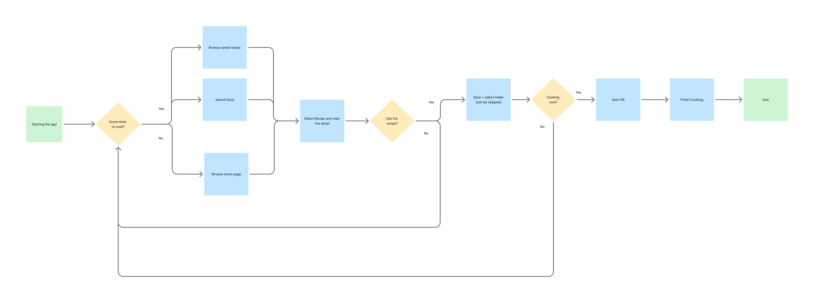
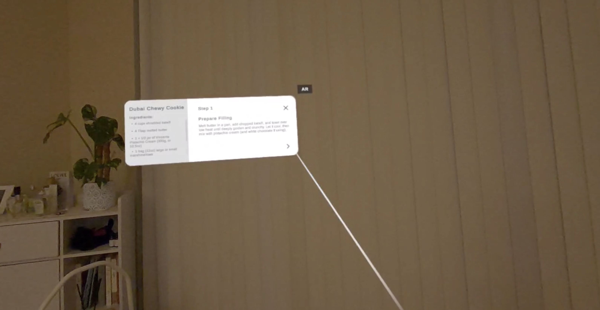
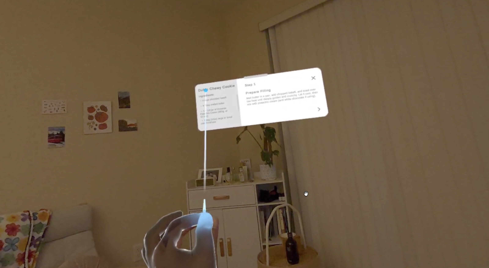

WIP Spatial UX Prototype
Chef AR explores how smart glasses could support cooking through glanceable recipe instructions, simple gesture input, and a mobile companion app for recipe discovery and organization.
AR Prototype
Chef AR — full prototype walkthrough
Cooking creates a real interaction constraint: users' hands are often wet, oily, dirty, or occupied. However, when following recipes, users frequently need to touch their phones to check ingredients, scroll through instructions, or move between steps.
This creates unnecessary interruptions during cooking and adds cognitive load at the exact moment users need to focus on the physical task.
Chef AR is a controller-free AR recipe assistant that lets users follow step-by-step cooking instructions through a lightweight spatial interface.
The mobile app helps users browse, save, and organize recipes before cooking. When they are ready to begin, they can launch AR Mode and view the recipe through smart glasses, using simple pinch-based interactions.
Design Goal
Create a cooking assistant that allows users to:
- follow recipe steps without touching their phone
- quickly glance at ingredients and instructions
- reduce visual clutter while cooking
- use simple, reliable gestures instead of complex interactions
- stay focused on the physical cooking task
System Flow

The mobile app supports browsing, saving, and preparing recipes. The AR mode is activated only when the user begins cooking, keeping the spatial interface focused on step-by-step guidance.
Mobile Companion Flow — Wireframe

I kept the mobile companion app intentionally low-fidelity at this stage because the main design challenge was not visual polish, but the relationship between mobile preparation and controller-free AR guidance.
The mobile flow supports recipe discovery and organization, while the AR interface focuses only on what users need during cooking: current step, ingredients, navigation, and visibility control.
Gesture Interaction Model
| Gesture | Function | Design Reason |
|---|---|---|
| Pinch on arrows | Move to next / previous recipe step | Uses visible controls to make navigation explicit and reduce gesture ambiguity |
| Pinch on X | Close the recipe panel for better visibility | Lets users temporarily clear the field of view while cooking |
| Pinch on closed bubble | Reopen the recipe panel | Keeps the recipe accessible without permanently occupying the view |
| Pinch-drag on ingredient panel | Scroll through ingredients | Allows secondary information to stay available without overwhelming the main step |
To keep the interaction model consistent, I used pinch-based input as the primary gesture across the prototype. Instead of relying on abstract gestures, users interact with visible controls, making the available actions easier to discover and more reliable to perform.
Key Iteration 1 — Swipe Navigation to Pinch Select
Early Direction
I initially explored swipe-based navigation for moving forward and backward through recipe steps.
Issue
In AR, swipe direction was not always intuitive. Forward and backward gestures could feel ambiguous, and input accuracy became unreliable depending on hand position and tracking.
Iteration
I changed the main navigation to pinch-to-select on visible arrow controls. This made the available actions more explicit, reduced gesture ambiguity, and created a more reliable interaction model for controller-free AR use.
Result
The interaction became simpler and easier to understand: users no longer needed to remember abstract directional gestures and could instead select visible controls directly.
Key Iteration 2 — Improving Target Visibility


Early Issue
The initial prototype made it difficult to understand exactly where the user was aiming. Because the target indicator and UI elements were both light-colored, the cursor often disappeared against the white recipe panel.
Iteration
I added a more visible blue target indicator to improve aiming clarity. This made it easier to understand which icon or UI element was currently being targeted before performing a pinch selection.
Result
The prototype became easier to control because the user could more clearly see the relationship between their hand input, the target indicator, and the selected UI element.
Prototype Implementation
The prototype was built in Unity using world-space UI cards, TextMeshPro, recipe step data, and input-driven navigation. I used AI-assisted development as a rapid prototyping partner while owning the interaction model, user flow, Unity scene setup, and design decisions.
This allowed me to quickly move from concept to a working prototype and focus on testing the core AR interaction questions: visibility, gesture clarity, step navigation, and information hierarchy.
Next Steps
Next, I plan to test the prototype with users while they follow a simple recipe task. I will focus on:
- text readability at different distances
- recipe panel placement and field-of-view comfort
- ingredient panel scrolling
- gesture discoverability
- target indicator visibility
- whether users can complete cooking steps without returning to their phone
Future iterations will refine the visual design, add stronger gesture feedback, and test how much recipe information should remain visible during active cooking.